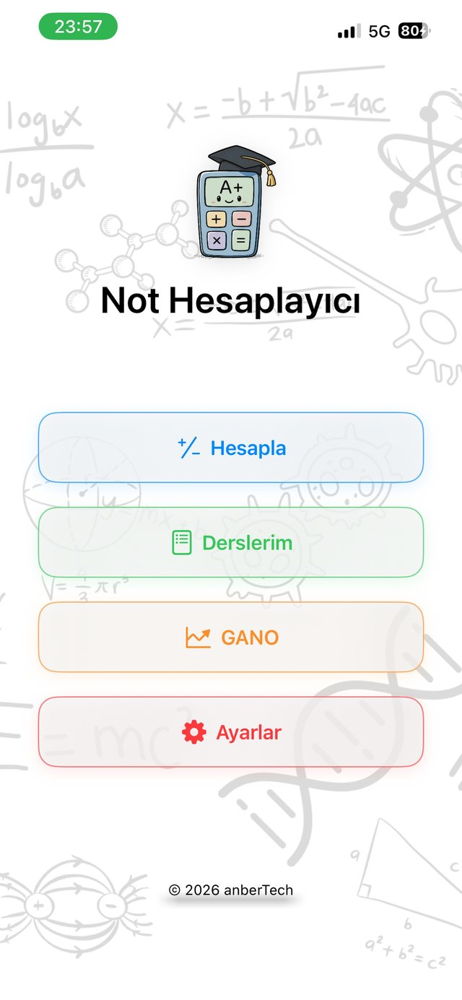
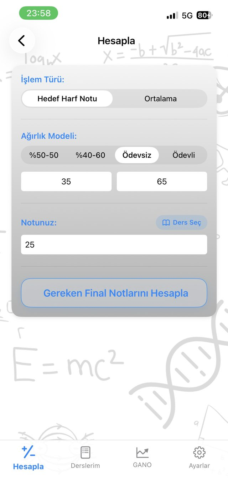
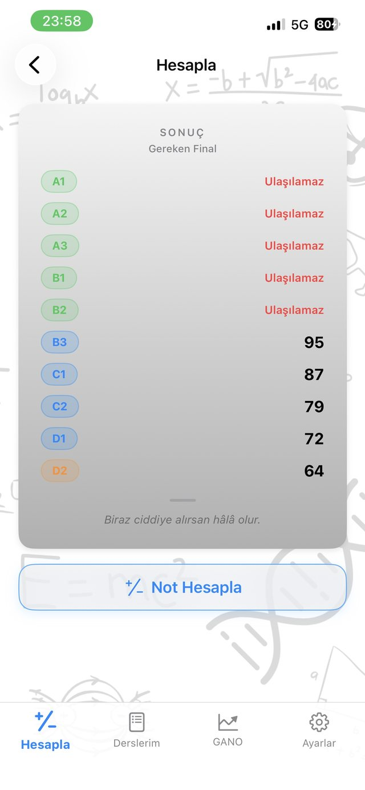
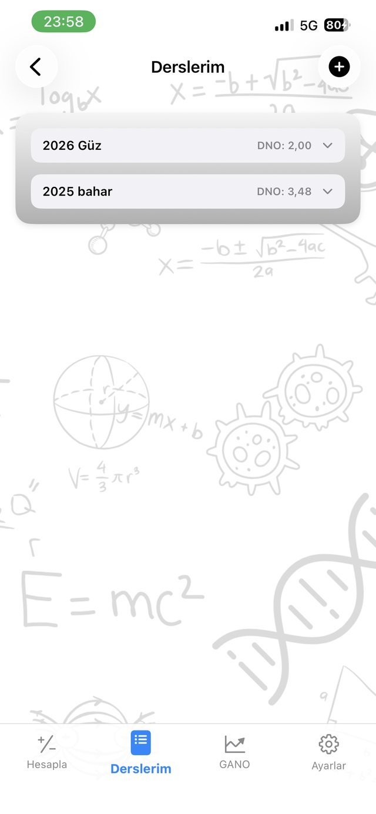
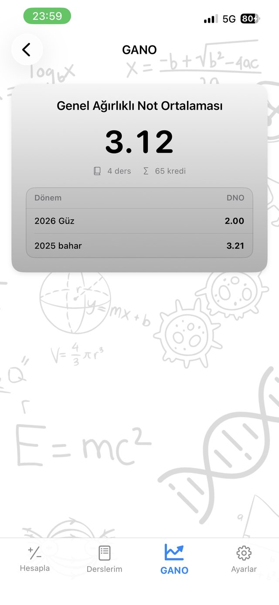

Ağırlıkların toplamı 100 olmalı.
Notunuz:Notlarınız:Uyarı: Final notunuzun en az 30 olması gerektiğini unutmayın!
Final notunuz 30'dan düşük olduğu için dersten kalırsınız.





%35 · %65
2025 bahar · DNO 3,48
3.12 · 65 kredi
A1 · 95–100